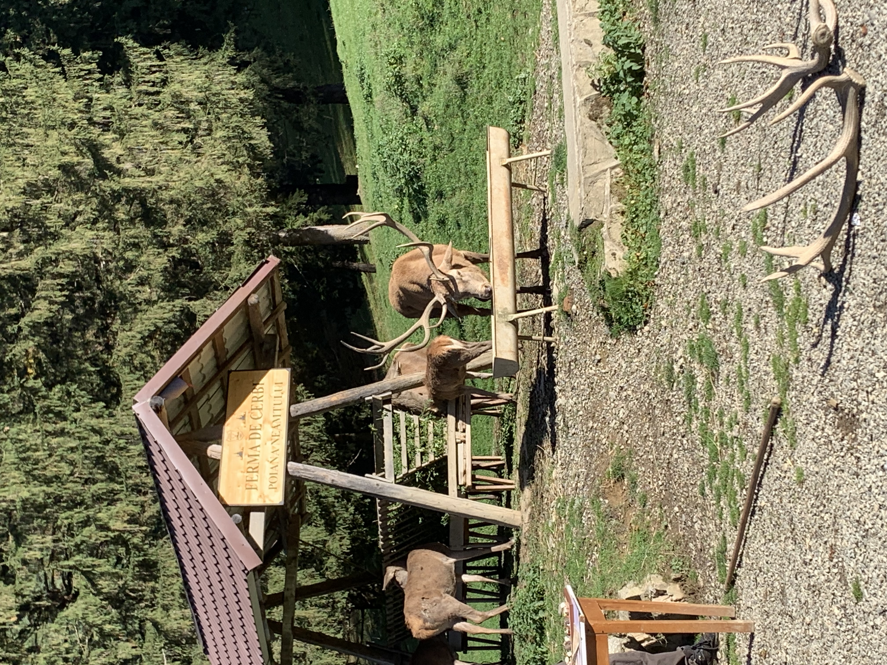
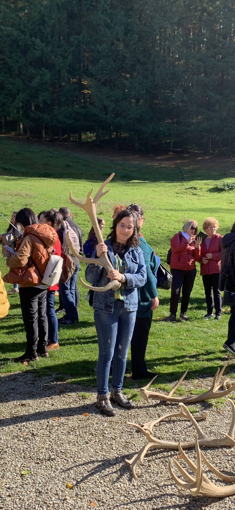

Pentru că îmi doream să scriu un nou articol pe Blog, m-am gândit să scriu despre frumusețea Cerbului și ce putem învăța de la el. Desigur, dacă nu aveam șansa să ajung la Ferma de Cerbi, nu aș fi scris despre ei... dar, spre fericirea mea, norocul mi-a surâs...
Toamna aduce cu ea o paletă de culori calde, parfum de frunze uscate și, în adâncul pădurii, un ecou al sălbăticiei: răgetul cerbului . Aceste creaturi impunătoare, cu o prezență regală, sunt considerate simboluri ale naturii neîmblânzite și ale ciclului vieții.

Anatomia și Comportamentul
Cerbul (Cervus elaphus), în special masculul, este ușor de recunoscut după coarnele sale impresionante. Acestea nu sunt permanente; ele cad în fiecare primăvară și cresc la loc, devenind tot mai mari și mai ramificate cu fiecare an, un indicator al vârstei și al sănătății animalului.
Sunt animale preponderent nocturne și crepusculare, iar dieta lor este alcătuită din ierburi, frunze, muguri și scoarță. În perioada de împerechere, care are loc toamna, masculii se luptă adesea pentru a-și stabili dominația și a atrage femelele (ciutele).

Cerbul în Cultură și Simbolism
De-a lungul istoriei, cerbul a ocupat un loc de cinste în mitologie și artă. În multe culturi, el simbolizează regenerarea (datorită pierderii și recreșterii coarnelor), grația, noblețea și legătura dintre cer și pământ. De asemenea, este un simbol puternic al toamnei și al schimbării.
Ce putem învăța de la Cerbi:
Dincolo de mugetele impresionante și coarnele maiestuoase, putem extrage câteva lecții valoroase despre cum să navigăm prin propria noastră viață.
1. Renunțarea și Reînnoirea (Puterea de a lăsa în urmă)
Cea mai frumoasă lecție a cerbului vinde de la coarnele sale. În fiecare an, masculul renunță la vechile structuri osoase, indiferent cât de impunătoare ar fi fost. Această renunțare anuală face loc pentru o creștere și mai puternică și mai ramificată.
- Lecția: Trebuie să învățăm să lăsăm în urmă eșecurile, vechile obișnuințe sau relațiile care nu ne mai servesc. Curajul de a renunța la ceea ce a fost (chiar dacă a fost glorios) este primul pas spre o reînnoire și o evoluție mai mare.
2. Smerenia în Forță (Grația în mișcare)
În ciuda mărimii și puterii lor, cerbii se mișcă cu o eleganță și o liniște uimitoare. Ei nu se folosesc de forța lor decât atunci când este absolut necesar, cum ar fi in timpul împerecherii. În rest, ei pășesc cu prudență și grație.
- Lecția:Puterea adevărată nu stă în etalarea constantă, ci în stăpânirea de sine și în grația acțiunilor noastre.
3. Adaptarea constantă (Supraviețuirea în pădure)
Cerbii sunt capabili să își modifice dieta și comportamentul în funcție de anotimp. Ei navighează prin ierni geroase și veri uscate, găsind resurse acolo unde alții nu le văd.
- Lecția:Viața ne aruncă mereu provocări noi. Nu putem controla mediul, dar putem controla cât de flexibili și adaptabili suntem. Capacitatea de a schimba planul fără a renunța la obiectiv este cheia supraviețuirii pe termen lung.
4. Ascultarea de sine (Simțurile Ascuțite)
Cerbii trăiesc în armonie cu mediul lor, fiind ghidați de simțuri extraordinar de ascuțite. Ei nu ignoră instinctul, ci se bazează pe el pentru a detecta pericolul sau pentru a găsi hrana.
- Lecția:Într-o lume plină de zgomot, trebuie să ne reconectăm cu intuiția noastră interioară. Să acordăm atenție semnelor subtile ale corpului și minții, deoarece de multe ori instinctul știe calea cea mai sigură.
Data viitoare când vei face o plimbare în pădure, oprește-te și ascultă. Poate vei avea șansa să întâlnești, chiar și cu ochiul minții, majestatea tăcută a cerbului, purtătorul coroanei de os al codrului. 🌿 Și DA: am ajuns la concluzia că ești mai fericit printre animale, decât printre oameni. De ce? Pentru că animalele știu să-ți redea ce omul îți ia: ZÂMBETUL BUCUROS ☺️